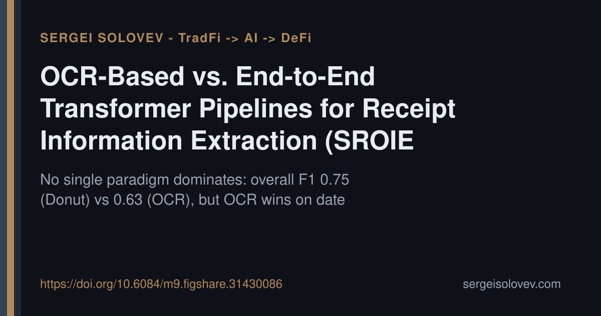

When building document extraction systems, the instinct is to pick one architecture and commit. But what if neither paradigm dominates across all fields?
In a systematic comparison on the ICDAR 2019 SROIE benchmark (80 validation receipts, three target fields: vendor, date, total), the results split cleanly. The fine-tuned Donut end-to-end vision-language transformer achieved the higher overall micro-F1 (0.75 vs. 0.63 for the EasyOCR cascaded pipeline), but the OCR pipeline outperformed on date extraction specifically — F1 of 0.78 vs. 0.63 — because regex patterns handle closed-vocabulary fields effectively where end-to-end generation adds unnecessary uncertainty.
The more practically useful finding: a 12-category error taxonomy showed the two pipelines fail on largely non-overlapping document subsets (Pearson r = 0.30). That is a strong signal for ensemble strategies rather than a winner-take-all choice. Under messenger-grade image corruption, Donut also showed better robustness, with ΔF1 of −0.12 versus −0.17 for the cascade — consistent with theoretical predictions about error propagation in multi-stage systems.
The takeaway for production systems: architecture selection should be field-specific, not document-level, and complementary failure modes make hybrid approaches worth measuring.
Full paper, code, and trained checkpoints: https://doi.org/10.6084/m9.figshare.31430086
#ML #RAG #AIagents